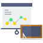

Referensi
PSB
Guru &
Pelajaran
Jadwal &
Kalender
Kesiswaan
Presensi
Penilaian
Kenaikan /Kelulusan
Mutasi
Laporan
Pengaturan
Your Name
Logout
Presensi Harian
Presensi Pelajaran
Presensi Kegiatan
Laporan Presensi Harian Siswa
Laporan Presensi Harian per Kelas
Laporan Harian Data Siswa yang Tidak Hadir
Statistik Kehadiran Siswa
Statistik Kehadiran per Kelas
Laporan Presensi Siswa
Laporan Presensi Siswa per Kelas
Laporan Presensi Pengajar
Laporan Data Siswa yang Tidak Hadir
Laporan Refleksi Mengajar

Statistik Kehadiran Siswa
Statistik Kehadiran Setiap Kelas
SI Terpadu Fingerprint
Presensi Kegiatan Siswa
Rekapitulasi Presensi Kegiatan Siswa
Presensi Kegiatan Guru
Rekapitulasi Presensi Kegiatan Guru